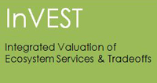
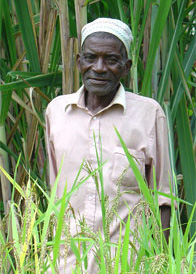

Toolbox
InVEST Software

InVEST is a family of tools to map and value the goods and services from nature which are essential for sustaining and fulfilling human life.
Science-Policy Interface Tools

Our science-policy interface tools draw on experience applying environmental services approaches worldwide to help governments, businesses, NGOs, and the general public to mainstream environmental services information into their decisions.
RIOS Software
RIOS is a free and open source software tool that supports the design of cost-effective investments in watershed services.
Environmental Services Project Database
This database contains strategies and outcomes from environmental services programs all around the world (compiled beteween 2006-2009) and illustrates when and how environmental services programs have been most successful.